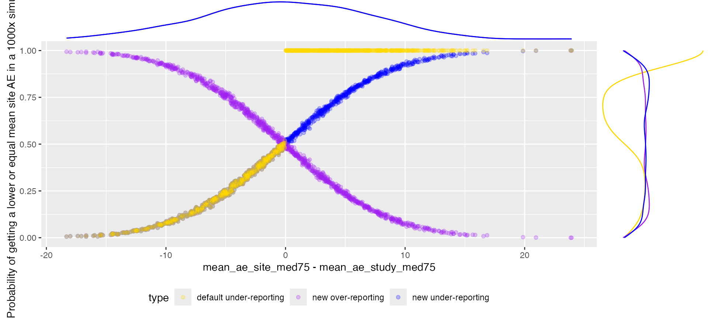
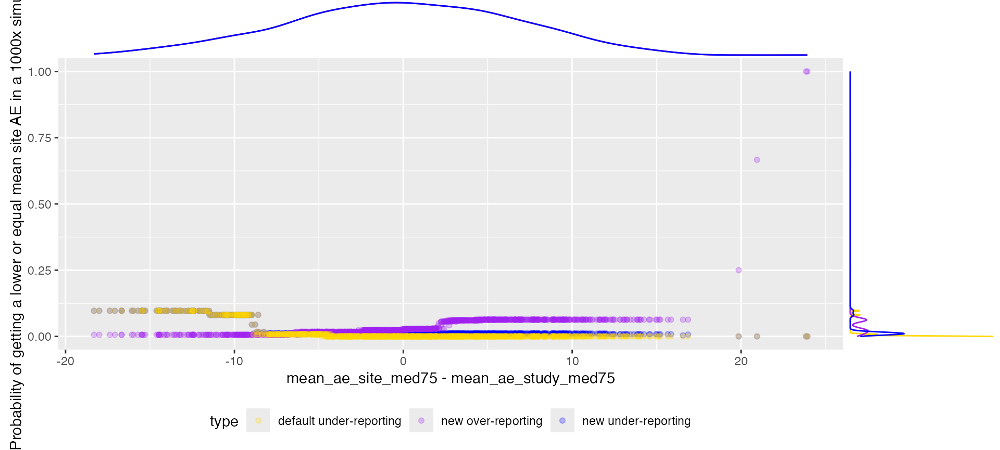
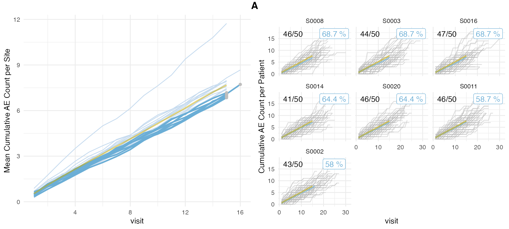

Introduction
{siamerep} was originally created to detect under-reporting of AEs
and therefore no over-reporting probability was calculated. Nevertheless
{simaerep} can theoretically be used to simulate all kinds of
subject-based clinical events, for some such as issues over-reporting
can represent a quality issue. With the recent release
0.5.0 we have added the option to calculate an
over-reporting probability score.
Data Set
We simulate a standard data set with a high number of sites, patients, visits and events to ensure that most of our dimensions will be normally distributed. We do not add any over- or under-reporting sites at this point.
set.seed(1)
df_visit <- sim_test_data_study(
n_pat = 10000,
n_sites = 1000,
frac_site_with_ur = 0,
max_visit_mean = 100,
max_visit_sd = 1,
ae_per_visit_mean = 5
)
df_visit$study_id <- "A"Run {simaerep}
in order to add the over-reporting probability score we need to set
the parameter under_only = FALSE.
system.time(
aerep_def <- simaerep(df_visit, under_only = TRUE)
)## user system elapsed
## 19.149 1.116 20.268The original setting skips the simulation for all sites that do have more AEs than the study average.
system.time(
aerep_ovr <- simaerep(df_visit, under_only = FALSE)
)## user system elapsed
## 23.329 1.100 24.481The new parameter calculates the probability of a site getting
a lower or equal average AE count for the site visit_med75
for every site, regardless of how its initial value compares to the
study average. The calculation only takes a few seconds longer than the
default setting.
In the evaluation data frame we have three more columns available now.
## [1] "prob_high" "prob_high_adj" "prob_high_prob_or"Analyze
Probability getting a lower AE count
cols <- c("study_id", "site_number", "mean_ae_site_med75", "mean_ae_study_med75", "prob_low")
p <- bind_rows(
select(
aerep_ovr$df_eval,
all_of(cols)
) %>%
mutate(type = "with over-reporting"),
select(
aerep_def$df_eval,
all_of(cols)
) %>%
mutate(type = "default")
) %>%
ggplot(aes(x = mean_ae_site_med75 - mean_ae_study_med75, y = prob_low, color = type)) +
geom_point(alpha = 0.5) +
theme(legend.position = "bottom") +
scale_color_manual(values = c("gold", "blue")) +
labs(y = "Probability of getting a lower or equal mean site AE in a 1000x simulation")
ggExtra::ggMarginal(p, groupColour = TRUE, type = "density")We can see that we have a gap for the default setting in the
generated probabilities. The values filling the gap can be interpreted
as the probability of having a higher site average than
originally observed.
Over-Reporting
We can add the over-reporting probability as (1- under-reporting probability), for cases when mean_ae_site_med75 is equal to mean_ae_study_med75 over-reporting probability will always be zero.
cols <- c("study_id", "site_number", "mean_ae_site_med75", "mean_ae_study_med75")
p <- bind_rows(
select(
aerep_ovr$df_eval,
all_of(cols),
value = "prob_low"
) %>%
mutate(type = "new under-reporting"),
select(
aerep_ovr$df_eval,
all_of(cols),
value = "prob_high"
) %>%
mutate(type = "new over-reporting"),
select(
aerep_def$df_eval,
all_of(cols),
value = "prob_low"
) %>%
mutate(type = "default under-reporting")
) %>%
ggplot(aes(x = mean_ae_site_med75 - mean_ae_study_med75, y = value, color = type)) +
geom_point(alpha = 0.25) +
theme(legend.position = "bottom") +
scale_color_manual(values = c("gold", "purple", "blue")) +
labs(y = "Probability of getting a lower or equal mean site AE in a 1000x simulation")
ggExtra::ggMarginal(p, groupColour = TRUE, type = "density")
Multiplicity Correction
The multiplicity correction dampens the signal, avoiding false positives that are the result of chance.
cols <- c("study_id", "site_number", "mean_ae_site_med75", "mean_ae_study_med75")
p <- bind_rows(
select(
aerep_ovr$df_eval,
all_of(cols),
value = "prob_low_prob_ur"
) %>%
mutate(type = "new under-reporting"),
select(
aerep_ovr$df_eval,
all_of(cols),
value = "prob_high_prob_or"
) %>%
mutate(type = "new over-reporting"),
select(
aerep_def$df_eval,
all_of(cols),
value = "prob_low_prob_ur"
) %>%
mutate(type = "default under-reporting")
) %>%
ggplot(aes(x = mean_ae_site_med75 - mean_ae_study_med75, y = value, color = type)) +
geom_point(alpha = 0.25) +
theme(legend.position = "bottom") +
scale_color_manual(values = c("gold", "purple", "blue")) +
labs(y = "Probability of getting a lower or equal mean site AE in a 1000x simulation")
ggExtra::ggMarginal(p, groupColour = TRUE, type = "density")
Simulating Over-Reporting
We can simulate under-reporting by supplying a negative ratio for
ur_rate
set.seed(1)
df_visit <- sim_test_data_study(
frac_site_with_ur = 0.05,
ur_rate = - 0.5,
)
df_visit$study_id <- "A"
distinct(df_visit, site_number, is_ur, ae_per_visit_mean)## # A tibble: 20 × 3
## site_number is_ur ae_per_visit_mean
## <chr> <lgl> <dbl>
## 1 S0001 TRUE 0.75
## 2 S0002 FALSE 0.5
## 3 S0003 FALSE 0.5
## 4 S0004 FALSE 0.5
## 5 S0005 FALSE 0.5
## 6 S0006 FALSE 0.5
## 7 S0007 FALSE 0.5
## 8 S0008 FALSE 0.5
## 9 S0009 FALSE 0.5
## 10 S0010 FALSE 0.5
## 11 S0011 FALSE 0.5
## 12 S0012 FALSE 0.5
## 13 S0013 FALSE 0.5
## 14 S0014 FALSE 0.5
## 15 S0015 FALSE 0.5
## 16 S0016 FALSE 0.5
## 17 S0017 FALSE 0.5
## 18 S0018 FALSE 0.5
## 19 S0019 FALSE 0.5
## 20 S0020 FALSE 0.5
aerep <- simaerep(df_visit, under_only = FALSE)
aerep$df_eval %>%
select(site_number, mean_ae_site_med75, mean_ae_study_med75, prob_low_prob_ur, prob_high_prob_or)## # A tibble: 20 × 5
## site_number mean_ae_site_med75 mean_ae_study_med75 prob_low_prob_ur
## <chr> <dbl> <dbl> <dbl>
## 1 S0001 11.7 7.48 0
## 2 S0002 7.72 8.27 0.58
## 3 S0003 6.93 7.72 0.687
## 4 S0004 7.40 7.69 0.364
## 5 S0005 7.98 7.66 0.118
## 6 S0006 8.67 8.22 0.118
## 7 S0007 7.58 7.68 0.276
## 8 S0008 6.85 7.72 0.687
## 9 S0009 7.78 7.67 0.118
## 10 S0010 7.59 7.68 0.248
## 11 S0011 7.17 7.71 0.587
## 12 S0012 7.9 7.67 0.118
## 13 S0013 7.6 7.19 0.118
## 14 S0014 7.05 7.71 0.644
## 15 S0015 7.98 7.66 0.118
## 16 S0016 6.96 7.72 0.687
## 17 S0017 7.36 7.69 0.445
## 18 S0018 7.91 7.67 0.118
## 19 S0019 7.46 7.69 0.364
## 20 S0020 7.09 7.71 0.644
## # ℹ 1 more variable: prob_high_prob_or <dbl>We can plot over-reporting by changing setting
prob_col = "prob_high_prob_or".
plot(aerep, prob_col = "prob_high_prob_or")## study = NULL, defaulting to study:A
plot(aerep, prob_col = "prob_low_prob_ur") # Default## study = NULL, defaulting to study:A